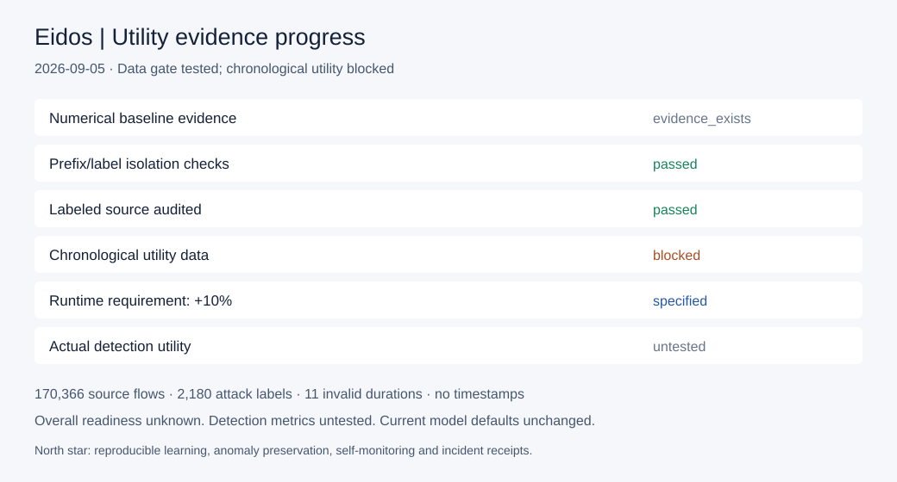

Data preparation is tested. The chronological experiment is blocked. Overall readiness is unknown; detection metrics are untested.

| Gate | Status | Receipt |
|---|---|---|
| Numerical baseline evidence | evidence_exists | prior_numerical_evidence/decision_report.md |
| Prefix/label isolation checks | passed | pytest_results.xml |
| Labeled source audited | passed | local_dataset_gate/dataset_audit.json |
| Chronological utility data | blocked | local_dataset_gate/run_manifest.json |
| Runtime requirement: +10% | specified | utility_requirements.json |
| Actual detection utility | untested | decision.json |
Decision and Proof Logic + Meaning · User runtime ceiling · Drive receipt